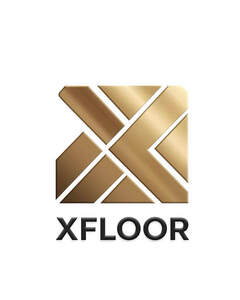

Trade Mark Journal No.2025/033 15 August 2025
UK00004245305 6 August 2025 (19,27,35,37)

- Class 19
- Hardwood flooring; Laminate flooring; Wood tile flooring; Parquet flooring; Flooring (Parquet -); Wood flooring; Vinyl flooring; Flooring underlay; Parquet wood flooring; Parquet flooring of wood; Flooring underlays; Bamboo flooring; Fabric for underlayment of flooring; Parquet flooring of cork; Wooden flooring; Laminated parquet flooring; Flooring tiles (Non-metallic -); Rubber flooring; Wood veneer parquet flooring; Ceramic tiles for flooring of building; Parquet flooring and parquet slabs; Flooring (Non-metallic -); Parquet flooring made of wood; Flooring screeds; Ceramic tiles for flooring and facing; Artificial wood flooring; Ceramic tiles for flooring and lining; Flooring made of wood; Tile flooring, not of metal; Parquet flooring made of cork; Laminate flooring, not of metal; Floor tiles of wood; Flooring underlay made of cork; Flooring materials (Non-metallic -); Floor coverings of wood; Tile floorings, not of metal; Synthetic flooring materials or wall-claddings; Hardwood decking boards; Ceramic tiles for floors; Tiles of ceramic for floors; Roofing underlayment; Blocks (Non-metallic -) for use in flooring construction; Tiles (Non-metallic -) for floors; Ceramic roofing tiles; Stone roofing tiles; Veneer for floors; Ceramic tiles for covering floors; Rubber floor tiles; Roofing boards [of wood]; Ceramic floor tiles; Non-metal roofing tiles; Wood sports floors; Wood siding; Roofing tiles (Non-metallic -); Ceramic tiles for external floors; Paver tiles; Stucco tiles; Non-metallic tiles for ceiling cladding; Concrete floors; Laminated parquet floorboards; Ceramic tiles for internal floors; Ceramic floor coverings; Floor tiles (Non-metallic -) for building; Clay roofing tiles; Athletic flooring, not of metal; Floor boards [of wood]; Floor boards of wood; Terra-cotta floor tiles; Wood paneling; Parquet floor boards; Floor boards (Parquet -); Wood laminates; Glazed ceramic floor tiles; Vinyl floor coverings for forming a floor; Mosaic floor tiles; Splashbacks [wall panels]; Wall panels (Non-metallic -); Non-metallic wall panels; Acoustic panels of wood for walls; Glazed wall panels [non-metallic frame]; Dividing wall panels (Non-metallic -); Capping stones for wall panels; Mosaic wall tiles; Ceramic wall tiles; Wall panels not of metal; Slates for wall cladding; Cladding panels (Non-metallic -) for walls; Non-metal floor panels; Non-metal wall tiles; Facing panels of plywood; Ceiling panels (Non-metallic -); Acoustic panels of wood for ceilings; Glazed ceramic wall tiles; Concrete panels; Glazed roof panels [non-metallic frame]; Timber panels; Glass panels for doors; Ceiling boards of wood; Wall stone; Wall tiles, not of metal, for building; Tiles of ceramic for walls; Ceramic tiles for external walls; Clay wall tiles; Ceiling panels, not of metal; Ceramic tiles for internal walls; Wall tiles, not of metal; Glass panels for building construction; Glass panels for windows; Glazing panels [non-metallic framed] for use in construction; Wall claddings (Non-metallic -); Wall claddings, not of metal, for building; Wall coatings (Cementitious -).
- Class 27
- Wall and ceiling coverings; Wall coverings of cork; Wall coverings; Vinyl wall coverings; Fabric wall coverings; Wall coverings of paper; Plastic wall coverings; Wall coverings of plastic; Textile wall coverings; Wall coverings of textile; Cloth wall coverings; Linoleum tiles [floor coverings]; Wall paper of vinyl; Vinyl floor coverings for existing floors; Non-textile wall coverings.
- Class 35
- Retail services in relation to wall coverings.
- Class 37
- Repair of laminate flooring; Maintenance of laminate flooring; Installing wood flooring; Fitting of laminate flooring; Repair of wood flooring; Maintenance of wood flooring; Fitting of wood flooring; Repair of artificial wood flooring; Maintenance of artificial wood flooring; Fitting of artificial wood flooring; Maintenance and repair of flooring; Construction of floors; Laying floor tile; Texturing (Ceiling or wall -); Installation of cavity wall insulation; Installing drywall panels; Installation of coloured panels in building facias; Wall texturing.
Chico Property Investments LTD